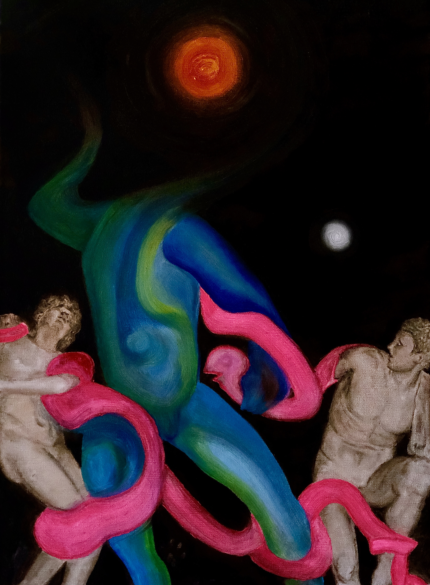

01 / 17
The Bonds of Id
Oil on canvas · 40 × 60 cm · 2025
The painting stages a contest between Id, Ego, and Superego. The sinuous blue-green torso at the center embodies the Id in its raw, irrational force—severed from its rational head, extending as pure instinct into darkness. The grey-white classical stone sculptures on either side stand for the rigid, repressive Superego and the reality-bound Ego. Fluorescent-pink bonds act as a Freudian repression mechanism, forcibly suturing instinct to civilized order, generating an agonized tearing sensation in the dark depths of the unconscious. Above, a red sun is consumed by unconscious darkness—the daylight of reason fading—as the ego undergoes its painful, inevitable alchemical transformation.